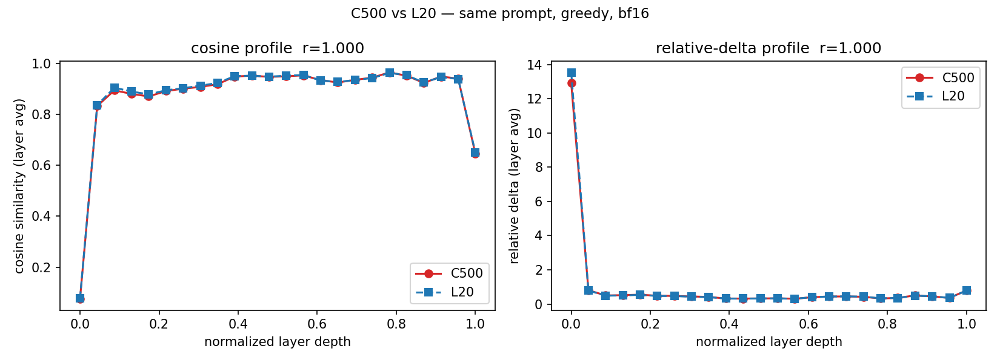
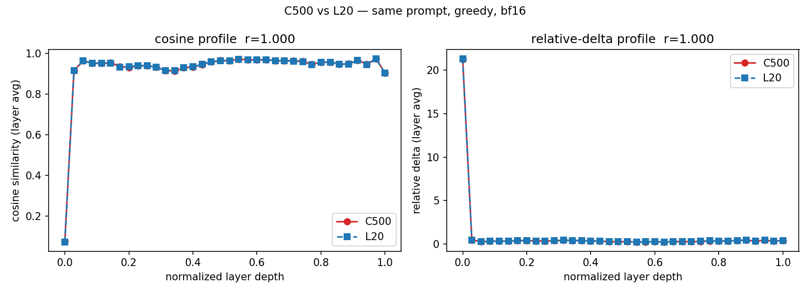
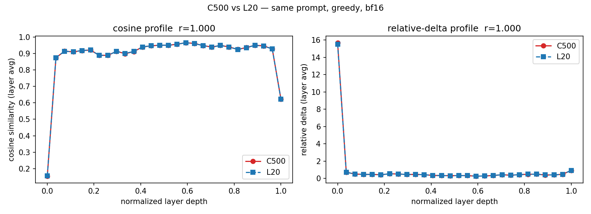
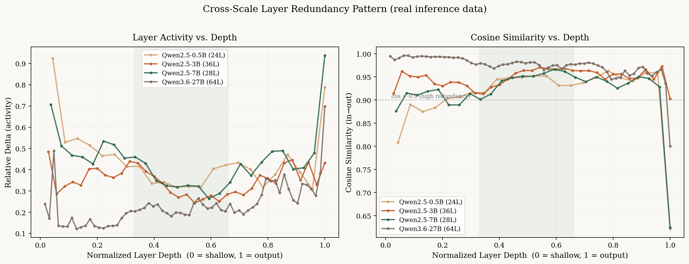

01 · 真机报告画廊
每一份报告，都是可以在浏览器里直接复核的证据
全部报告由仓库内提交的 JSONL 原始数据渲染，自包含单文件、无需任何 GPU 即可打开—— 我们称之为「无卡可审计」：诊断工具本身就是证据链。
指纹缩写：C500 = MetaX 曦云 C500（16GB sGPU 切分 · MXMACA 3.3.0.15 · torch 2.8.0+metax3.3.0.2）； L20 = NVIDIA L20 48GB（torch 2.10.0+cu128 · transformers 4.57.6）。报告打开后右上角可见完整会话信息。多提示词集（0.5B×10 提示词、TinyLlama）报告因采集端一处已修复的缺陷暂缓上廊，C500 侧重采后恢复。
02 · 跨硬件一致性
同一模型，两种硬件，几乎相同的冗余画像
同模型、同提示词、同解码协议（greedy · bf16 · 50 token），分别在沐曦 C500 与 NVIDIA L20 上诊断。 10 条多样化提示词协议下，Qwen2.5 三个规模的层级冗余画像 Pearson r = 1.0000—— 在一种硬件上得出的冗余结论，可以直接迁移到另一种硬件。跨架构同样成立（TinyLlama-1.1B / Llama 架构，r = 0.9968）。
| 模型 | 架构 | r（余弦画像） | r（Relative Delta） | MAE |
|---|---|---|---|---|
| Qwen2.5-0.5B | Qwen2 | 1.0000 | 1.0000 | 0.0008 |
| Qwen2.5-3B | Qwen2 | 1.0000 | 1.0000 | 0.0007 |
| Qwen2.5-7B | Qwen2 | 1.0000 | 1.0000 | 0.0005 |
| TinyLlama-1.1B | Llama | 0.9968 | 0.9998 | 0.0040 |



03 · 跨规模实证
中间层冗余最显著——0.5B 到 27B 稳定成立
参数跨度约 54 倍（Qwen2.5-0.5B / 3B / 7B + Qwen3.6-27B hybrid）。层深度归一化后， 四个模型的中间段余弦相似度都明显高于浅层与深层：冗余集中在模型的「腰上」。

04 · MXMACA 适配实录
一个租来的夜晚：C500 上的一夜冲刺
2026-08-19 晚，在 Gitee AI 模力方舟按小时租用曦云 C500（16GB sGPU 切分）， 从零代码修改跑通到跨硬件实证、再到工具自身的性能修复，全部在一个实例生命周期内完成。
- 22:36
实例就位
租下曦云 C500 切分实例（¥1/时），官方 MACA 3.x + PyTorch 2.8.0 镜像。环境指纹三件套（mx-smi / torch 版本 / 系统信息）先行留档。
- 22:53
阶段 A · 通路验证
Qwen2.5-0.5B 完整生成，零代码修改挂上全部 24 层 hook，384 步指标全量采集，自包含 HTML 报告与 JSONL 落盘。
- 23:07
阶段 B · 三规模对照
0.5B / 3B / 7B 与 NVIDIA L20 同协议对照，画像一致性 r ≥ 0.9998。意外收获：7B（bf16 权重 15.3GB）在 16GB 切分实例上完整跑通。
- 23:18
方法学加固
L20 间隔两月重跑稳定性验证 r ≥ 0.9985——排除运行噪声，跨硬件差异只能来自数值栈。
- 23:30
early-exit 首轮 · 一个负结果
朴素逐 token 熵阈值 100% 过早截断。逐 token 熵序列追踪定位根因：格式化 token 形成散布全答案的超低熵簇（<0.05 nats）。
- 23:40
窗口判据 · 把负结果变功能
实现 entropy_window（连续 N 步低熵才退出）。24 提示词复测得到单调可控权衡曲线——负结果公开入库，修复成为 v0.6.0 功能。
- 23:52
给工具自己治病
实测发现 hook 采集在多层数模型上拖慢生成 4–5 倍。重构为设备端张量化 + 每步单次批量回传：+400% → 约 +55%，指标数值逐位不变（MAE = 0.0000）。
- 00:12
实时演示 + v0.6.0
Qwen2.5-7B 经 SSH 隧道实时驱动 Dashboard，热力图逐 token 生长——本站 hero 即其截图数据。随后多提示词 r = 1.0000、TinyLlama 跨架构、v0.6.0 发布。
05 · Pilot early-exit
把度量变成行动：可调的「质量—算力」旋钮
当模型连续多步足够自信时提前结束生成。横轴为熵阈值（log 刻度），纵轴为生成的 token 数（% 相对基线）—— 曲线上的每一点都是 C500 上的真实测量（24 条多样化提示词，窗口 = 5）。
悬停查看每个阈值的取舍
06 · 公开的负结果
我们错过的一次，以及为什么把它写进 README
Pilot v1 曾按「高余弦相似度 = 可跳过」的直觉直接跳过中间冗余层。Qwen2.5-7B 实测：
| 配置 | perplexity | 变化 |
|---|---|---|
| 基线（全部层） | 13.81 | — |
| 跳过中间「冗余」层 | 105.67 | +665% |
结论：残差架构里余弦相似度饱和 ≠ 这层没用，「看似冗余」的层仍承担必要的细化计算。 完整记录随 commit 1938d60 公开，Pilot 转向基于置信度的 early-exit。 公开纠错是我们可信度的一部分。
07 · 精确支持契约
验证了什么，就说什么
已实测
- Qwen2.5-0.5B / 3B / 7B-Instruct（bf16）· C500 + L20 双侧
- TinyLlama-1.1B（Llama 架构）· 双侧
- Qwen3.6-27B（hybrid）· L20 单侧
- torch 2.8.0+metax3.3.0.2 / MACA 3.3.0.15 / transformers 4.57.x
- 83 项单元测试 · CPU 环境全量运行
边界声明
- 冗余结论不外推到未测模型
- 27B 级 C500 整机对照：计划 2026-10
- Attention / FFN 子层粒度：路线图中期
- early-exit 质量度量当前为 token 级保留率，任务级正确性评估进行中
FAQ
「无卡可审计」是什么意思？
仓库内提交了每次实验的 JSONL 原始数据与环境指纹；本画廊的报告全部由这些数据渲染，任何人在任何电脑上打开即可复核——不需要租 GPU。
怎么在沐曦卡上复现？
租「曦云 C500 + PyTorch 2.8.0」官方镜像实例，pip install univis（或克隆仓库），注意不要用公版 torch 覆盖镜像里的 +metax 适配版。完整步骤见仓库 docs/mxmaca/phase-a/README.md。
接入我的模型要改多少代码？
两行：tracker = univis.attach(model) 与 model.generate(..., logits_processor=[tracker.logits_processor(tok)])。架构按 config 自动识别。